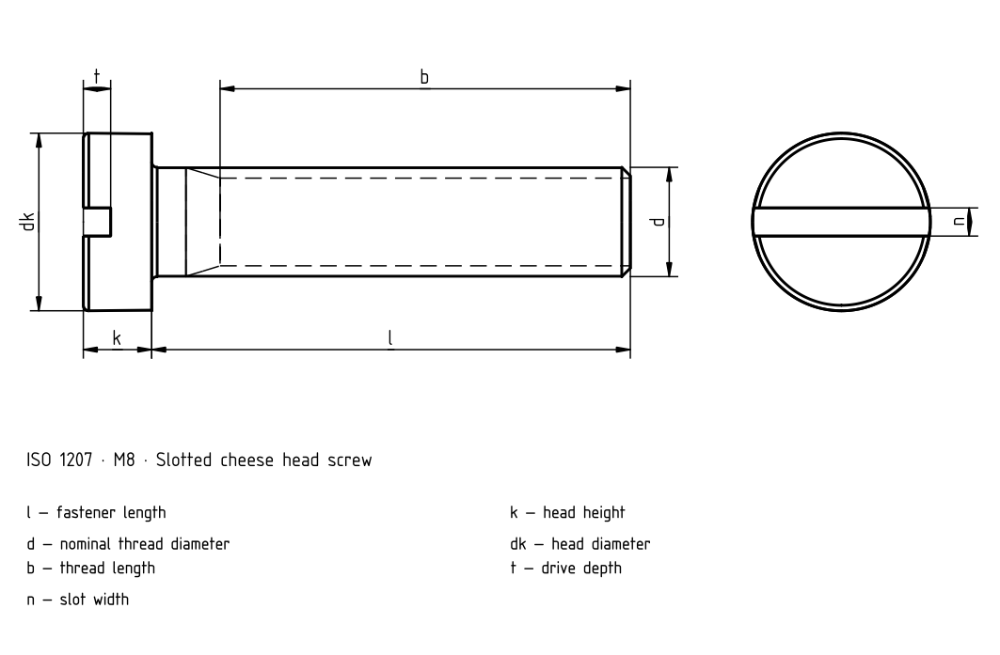

Slotted cylindrical head screws — grade A
Historical source; numeric values and exceptions have not been fully verified against the current standard.

Slotted cylindrical head screws — grade A
| d | Pitch P | a _max. | b _min. | d _k max.1) | d _k min.1) | d _a max.1) | k _max. | k _min. | n | n _max. | n _min. | r _min. | t _min. | w _min. | x _max. |
|---|---|---|---|---|---|---|---|---|---|---|---|---|---|---|---|
| M1,6 | 0.35 | 0.7 | 25 | 3.0 | 2.86 | 2 | 1.1 | 0.96 | 0.4 | 0.6 | 0.46 | 0.1 | 0.45 | 0.4 | 0.9 |
| M2 | 0.4 | 0.8 | 25 | 3.8 | 3.62 | 2.6 | 1.4 | 1.26 | 0.5 | 0.7 | 0.56 | 0.1 | 0.6 | 0.5 | 1 |
| M2,5 | 0.45 | 0.9 | 25 | 4.5 | 4.32 | 3.1 | 1.8 | 1.66 | 0.6 | 0.8 | 0.66 | 0.1 | 0.7 | 0.7 | 1.1 |
| M3 | 0.5 | 1 | 25 | 5.5 | 5.32 | 3.6 | 2 | 1.86 | 0.8 | 1 | 0.86 | 0.1 | 0.85 | 0.75 | 1.25 |
| (M3,5) | 0.6 | 1.2 | 38 | 6.0 | 5.82 | 4.1 | 2.4 | 2.26 | 1 | 1.2 | 1.06 | 0.1 | 1 | 1 | 1.5 |
| M4 | 0.7 | 1.4 | 38 | 7.0 | 6.78 | 4.7 | 2.6 | 2.46 | 1.2 | 1.51 | 1.26 | 0.2 | 1.1 | 1.1 | 1.75 |
| M5 | 0.8 | 1.6 | 38 | 8.5 | 8.28 | 5.7 | 3.3 | 3.12 | 1.2 | 1.51 | 1.26 | 0.2 | 1.3 | 1.3 | 2 |
| M6 | 1 | 2 | 38 | 10.0 | 9.78 | 6.8 | 3.9 | 3.6 | 1.6 | 1.91 | 1.66 | 0.25 | 1.6 | 1.6 | 2.5 |
| M8 | 1.25 | 2.5 | 38 | 13.0 | 12.73 | 9.2 | 5 | 4.7 | 2 | 2.31 | 2.06 | 0.4 | 2 | 2 | 3.2 |
| M10 | 1.5 | 3 | 38 | 16.0 | 15.73 | 11.2 | 6 | 5.7 | 2.5 | 2.81 | 2.56 | 0.4 | 2.4 | 2.4 | 3.8 |
Slotted cylindrical head screws — grade A · Standards context
| Item | Value |
|---|---|
| Standards context | ISO 1207:2011 |
| Product grade | A |
| Property class | The complete standard is needed to verify dimensions, tolerances and all conditions. |
Slotted cylindrical head screws — grade A
| d | Pitch P | a _max. | b _min. | d _k max.1) | d _k min.1) | d _a max.1) |
|---|---|---|---|---|---|---|
| M1,6 | 0.35 | 0.7 | 25 | 3.0 | 2.86 | 2 |
| M2 | 0.4 | 0.8 | 25 | 3.8 | 3.62 | 2.6 |
| M2,5 | 0.45 | 0.9 | 25 | 4.5 | 4.32 | 3.1 |
| M3 | 0.5 | 1 | 25 | 5.5 | 5.32 | 3.6 |
| (M3,5) | 0.6 | 1.2 | 38 | 6.0 | 5.82 | 4.1 |
| M4 | 0.7 | 1.4 | 38 | 7.0 | 6.78 | 4.7 |
| M5 | 0.8 | 1.6 | 38 | 8.5 | 8.28 | 5.7 |
| M6 | 1 | 2 | 38 | 10.0 | 9.78 | 6.8 |
| M8 | 1.25 | 2.5 | 38 | 13.0 | 12.73 | 9.2 |
| M10 | 1.5 | 3 | 38 | 16.0 | 15.73 | 11.2 |
Slotted cylindrical head screws — grade A
| d | k _max. | k _min. | n | n _max. | n _min. | r _min. |
|---|---|---|---|---|---|---|
| M1,6 | 1.1 | 0.96 | 0.4 | 0.6 | 0.46 | 0.1 |
| M2 | 1.4 | 1.26 | 0.5 | 0.7 | 0.56 | 0.1 |
| M2,5 | 1.8 | 1.66 | 0.6 | 0.8 | 0.66 | 0.1 |
| M3 | 2 | 1.86 | 0.8 | 1 | 0.86 | 0.1 |
| (M3,5) | 2.4 | 2.26 | 1 | 1.2 | 1.06 | 0.1 |
| M4 | 2.6 | 2.46 | 1.2 | 1.51 | 1.26 | 0.2 |
| M5 | 3.3 | 3.12 | 1.2 | 1.51 | 1.26 | 0.2 |
| M6 | 3.9 | 3.6 | 1.6 | 1.91 | 1.66 | 0.25 |
| M8 | 5 | 4.7 | 2 | 2.31 | 2.06 | 0.4 |
| M10 | 6 | 5.7 | 2.5 | 2.81 | 2.56 | 0.4 |
Slotted cylindrical head screws — grade A
| d | t _min. | w _min. | x _max. |
|---|---|---|---|
| M1,6 | 0.45 | 0.4 | 0.9 |
| M2 | 0.6 | 0.5 | 1 |
| M2,5 | 0.7 | 0.7 | 1.1 |
| M3 | 0.85 | 0.75 | 1.25 |
| (M3,5) | 1 | 1 | 1.5 |
| M4 | 1.1 | 1.1 | 1.75 |
| M5 | 1.3 | 1.3 | 2 |
| M6 | 1.6 | 1.6 | 2.5 |
| M8 | 2 | 2 | 3.2 |
| M10 | 2.4 | 2.4 | 3.8 |
Slotted cylindrical head screws — grade A · Standards context
| Item | Value |
|---|---|
| Standards context | ISO 1207:2011 |
| Product grade | A |
| Property class | The complete standard is needed to verify dimensions, tolerances and all conditions. |